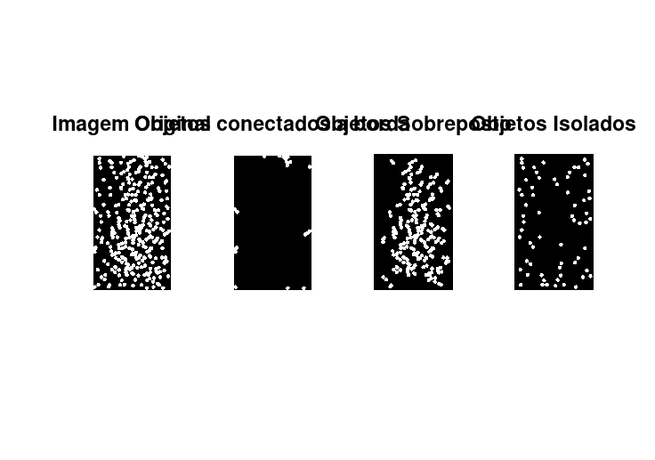

Autor: Marlon da Silva Rogério
GONZALEZ, R. C., WOODS, R. E. Processamento de Imagens Digitais. Editora Edgard Blucher, ISBN São Paulo, 2000. Support MathWorks, 2021. Disponível em: https://www.mathworks.com/help/. Acesso em: 18 de julho. de 2021.
%Uma etapa de pré-processamento para um aplicativo de microscopia aborda o problema de isolar %partículas redondas individuais de partículas semelhantes que se sobrepõem em grupos de duas %ou mais partículas (ver imagem a seguir**). %Partindo do princípio de que todas as partículas são do mesmo tamanho, proponha um algoritmo %morfológico que produza três imagens que possuam, respectivamente: %(a) Apenas partículas que se fundiram com a borda da imagem. %(b) Apenas partículas sobrepostas. %(c) Apenas partículas que não se sobrepõem. %(d) tentar separar Apenas partículas para que não “se sobrepõem” (processar item b depois unir %com o restante). % -- A Ideia é deixar pronto para aplicar um algoritmo de contagem (utilize 'regionprops') img = imread('segmentacao.tif'); % Obejtos Objetos conectados às bodas bordas = imclearborder(img, 8); bordas = img - bordas; % Obejtos Sobrepostos sobreapostos = bwareaopen(img, 576); sobreapostos = sobreapostos - bordas; % Objetos Isolados isolados = img - sobreapostos - bordas; figure subplot(1,4,1); imshow(img); title('Imagem Original'); subplot(1,4,2); imshow(bordas); title('Objetos conectados a borda'); subplot(1,4,3); imshow(sobreapostos); title('Objetos Sobreposto'); subplot(1,4,4); imshow(isolados); title('Objetos Isolados');